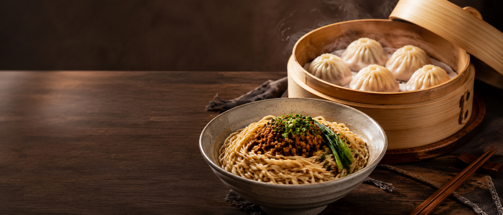
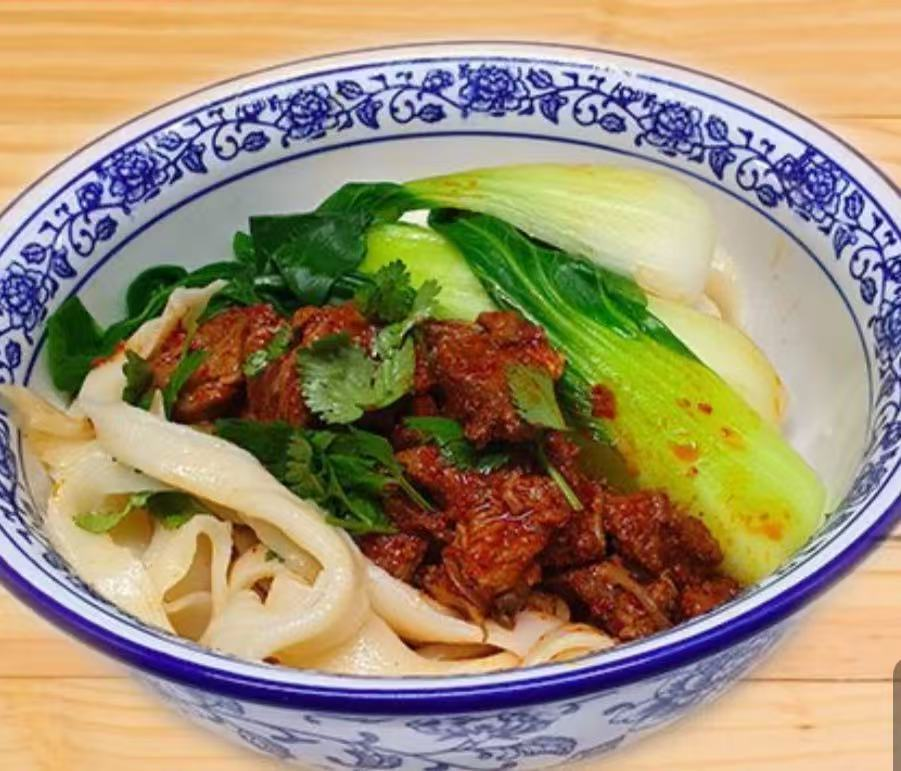
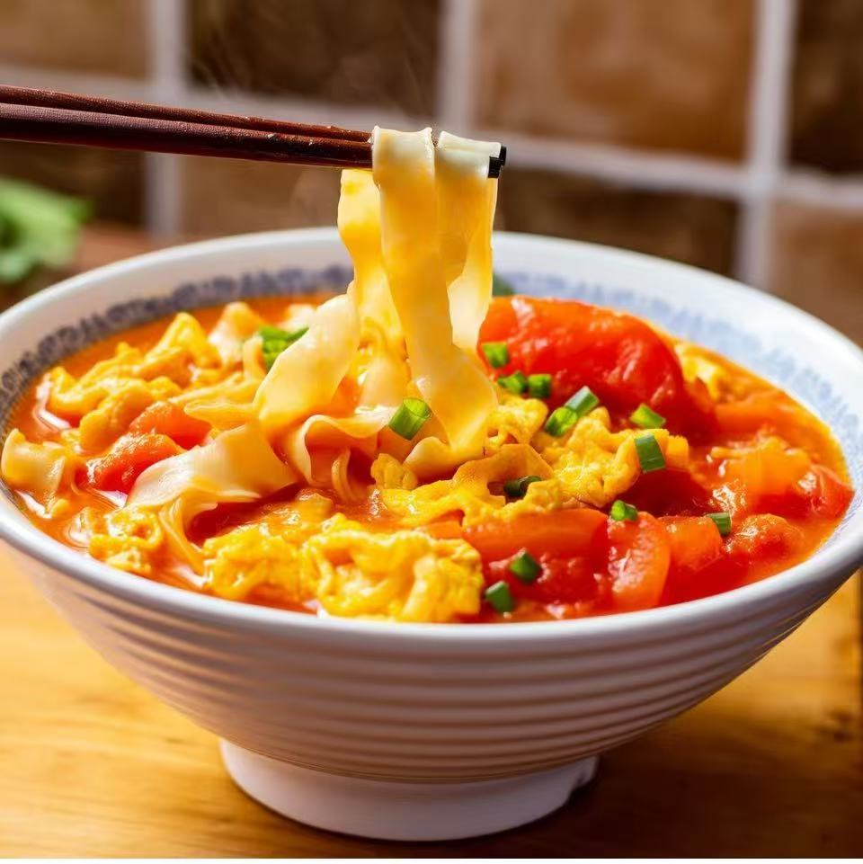

Nouilles · 面条
Nouilles à l'huile brûlante
油泼面
Larges nouilles tirées main, huile de piment versée bouillante, ail et ciboule.
9,80 €
Raviolis pliés un à un, nouilles tirées chaque jour, vermicelles en pot mijotés et feu vif du Sichuan — une maison chinoise au cœur du 9e.
Chez Viva Raviolis, tout commence par les mains. Les raviolis — 猪肉饺子, 小笼包, 煎包 — sont façonnés et pliés sur place. Les nouilles sont étirées et taillées à la commande pour le 油泼面 nappé d'huile brûlante, le 担担面 et nos nouilles sautées.
À midi, formules généreuses et bols de riz garnis. Le soir, la maison déploie ses casseroles de vermicelles (砂锅粉) et le grand répertoire de la cuisine du Sichuan — parfumée, vive, relevée.
— Une cuisine du geste, servie comme un salon.

FaitLarges nouilles tirées main, huile de piment versée bouillante, ail et ciboule.

Bœuf longuement braisé, bok choy, bouillon parfumé et nouilles fraîches.

Le réconfort par excellence : tomates fondantes, œuf nuage, nouilles soyeuses.
Bois chaud, lumières tamisées et vapeurs des paniers : entrez quelques instants dans notre salle.
Nos raviolis et nouilles voyagent bien — récupérez-les sur place ou faites-vous livrer.
La réservation est conseillée le soir et le week-end. Appelez-nous au 01 77 19 55 73 — nous vous trouverons une table.
Le fait-main : raviolis (饺子, 小笼包, 煎包), nouilles tirées (油泼面, 担担面, nouilles sautées), vermicelles en pot (砂锅粉) et les grands plats du Sichuan.
Oui — du lundi au vendredi, de 11h à 15h, nos bols de riz garnis (盖码饭) de 9,90 € à 11,90 €.
Bien sûr : gyoza végétariens, tofu, légumes sautés, aubergines façon yu-xiang et plus encore sur la carte.
Les spécialités du Sichuan sont signalées 🌶️ sur la carte. On peut adapter le niveau de piquant — n'hésitez pas à demander.
57 rue du Faubourg Montmartre
75009 Paris
Lun – Ven : 11h–15h · 17h30–23h30
Sam – Dim : 11h–23h30
Métro Grands Boulevards (L8 · L9) · Le Peletier (L7)
Raviolis pliés à la main, nouilles tirées du jour et feu du Sichuan — sept jours sur sept.